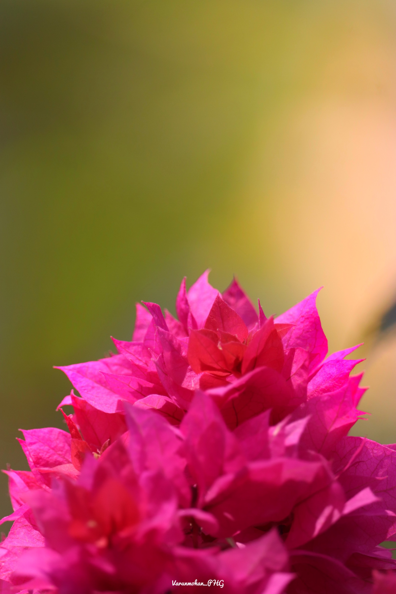
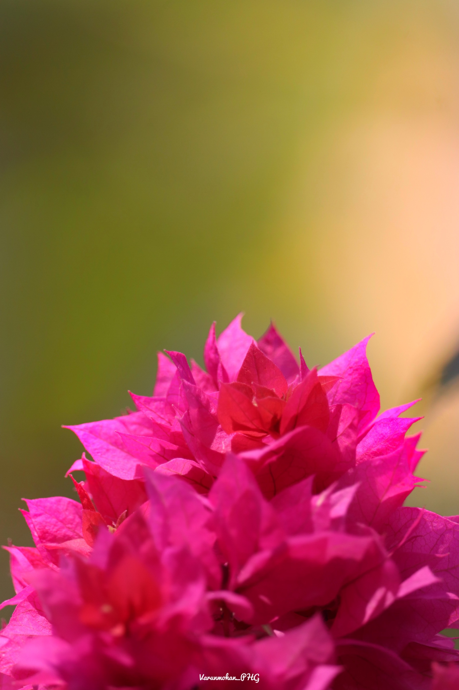
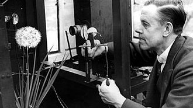
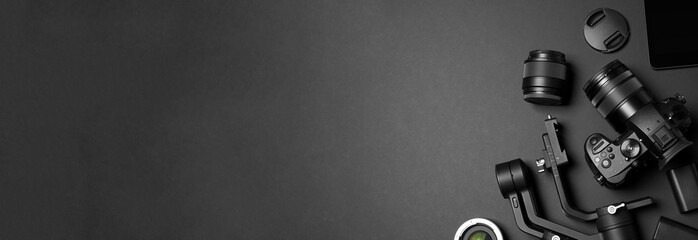

Macro photography (or photomacrography or macrography, and sometimes macrophotography) is extreme close-up photography, usually of very small subjects and living organisms like insects, in which the size of the subject in the photograph is greater than life size (though macrophotography also refers to the art of making very large photographs). By the original definition, a macro photograph is one in which the size of the subject on the negative or image sensor is life size or greater. In some senses, however, it refers to a finished photograph of a subject that is greater than life size.
The ratio of the subject size on the film plane (or sensor plane) to the actual subject size is known as the reproduction ratio. Likewise, a macro lens is classically a lens capable of reproduction ratios of at least 1:1, although it often refers to any lens with a large reproduction ratio, despite rarely exceeding 1:1.
Due to advances in sensor technology, today's small-sensor digital cameras can rival the macro capabilities of a DSLR with a "true" macro lens, despite having a lower reproduction ratio, making macro photography more widely accessible at a lower cost. In the digital age, a "true" macro photograph can be more practically defined as a photograph with a vertical subject height of 24 mm or less.


 

HISTORY
The term photo-macrograph was proposed in 1899 by W. H. Walmsley for close-up images with less than 10 diameters magnification, to distinguish from true photo-micrographs. Development of the photo-micrograph led to the evolution of macro photography. One of the earliest pioneers of macro photography was Percy Smith, born in 1880. He was a British nature documentary filmmaker, and was known for his close-up photographs.
TECHNICAL CONSIDERATIONS
LIGHTING
The problem of sufficiently and evenly lighting the subject can be difficult to overcome. Some cameras can focus on subjects so close that they touch the front of the lens. It is difficult to place a light between the camera and a subject that close, making extreme close-up photography impractical. A normal-focal-length macro lens (50 mm on a 35 mm camera) can focus so close that lighting remains difficult. To avoid this problem, many photographers use telephoto macro lenses, typically with focal lengths from about 100 to 200 mm. These are popular as they permit sufficient distance for lighting between the camera and the subject.
CHROMATIC ABBERATION
Many macro lenses are characterised by a high amount of chromatic aberration, especially when using reversed-lens, extension tube or close-up lens. Some macro lenses, called apochromatic lenses, are designed to better control this, such as the Laowa 100mm f/2.8 2x Ultra Macro APO and the Sigma APO MACRO 150mm F2.8